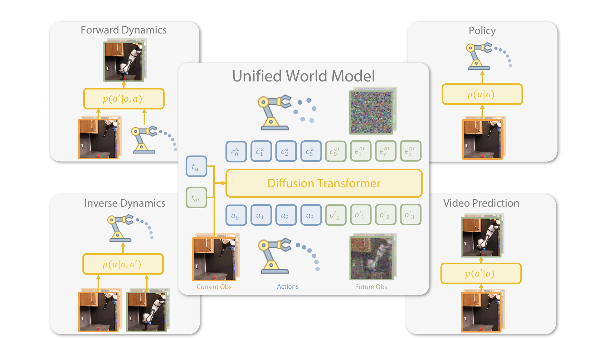

Unified World Models: Coupling Video and Action Diffusion for Pretraining on Large Robotic Datasets
Zhu 等 · 2025 技术报告 · arXiv:2504.02792 v3 · Zotero L9RRWG5V
UWM 的关键发明是给动作 $a$ 与未来观测 $o'$ 分配彼此独立的扩散时间步 $t_a,t_{o'}$：把某一变量设为干净、另一变量设为纯噪声，就能用同一模型切换策略、前向动力学、逆动力学或纯视频预测。
§1 Introduction：一个模型怎样同时回答 policy、forward dynamics 和 inverse dynamics
模仿学习可以从观测直接生成动作，但训练分布之外容易脆化；世界模型能从视频学习动力学，却常与最终策略分开。真正困难的是数据不完整：机器人轨迹同时有图像和动作，互联网或 play 视频只有图像。如果为每个条件查询训练独立模型，表示不能共享，数据也难混合。
UWM 把未来图像 diffusion 与动作 diffusion 放进同一个 Transformer，却为两种模态设置独立噪声时间步。控制动作噪声和图像噪声的程度，就等价于选择“已知什么、要生成什么”：图像干净/动作全噪声是 policy；动作干净/图像全噪声是 forward dynamics；当前与未来图像干净/动作全噪声是 inverse dynamics；两者都生成则得到联合模型。
展开原文 · 核心机制
“independent diffusion timesteps govern each modality”
§2 Related Work：从专用模型到可查询联合分布
Diffusion Policy 专门学习 $p(a\mid o)$，video world model 专门学习 $p(o'\mid o,a)$；PAD 已把动作与未来图像放进联合去噪，但 UWM 进一步把条件化写成噪声级别的“任务代数”。这接近多模态 masked modeling：某模态保持干净即作为条件，推到最大噪声即要求模型生成。
相比级联 WAM，UWM 不固定“先视频后动作”的方向；同一个参数化既可做政策，也可做逆动力学和正向预测。相比 UVA，它更强调通过双 timestep 表示多种概率查询；UVA 更强调联合 latent 与解耦 decoder，让动作在部署时绕过昂贵视频生成。
§3 一张联合分布，四种条件查询
- Policy
- $p(a\mid o)$：未来图像被完全加噪/边缘化，只生成动作。
- Forward dynamics
- $p(o'\mid o,a)$：动作保持干净，未来观测从噪声恢复。
- Inverse dynamics
- $p(a\mid o,o')$：给定当前与目标未来，恢复动作。
- Video prediction
- $p(o'\mid o)$：动作被完全加噪，边缘化动作影响。
§4 模态专属 diffusion timestep

1. 独立选择 $t_a,t_{o'}$
$0$ 近似完全可见，$T$ 近似完全遮蔽。
输入是什么：当前任务提供的原始观测、指令、机器人状态或训练数据。先明确这些输入，才能判断后面的结论是否用了部署时拿不到的信息。
这一步究竟做什么：本步骤执行“独立选择 $t_a,t_{o'}$”。具体来说，$0$ 近似完全可见，$T$ 近似完全遮蔽。 它控制模型究竟看到什么、需要预测什么，避免后续比较因为输入长度或难度不同而失去意义。
输出到哪里：经过本步骤处理、含义更明确的中间结果。这个结果会交给下一步“DiT 预测两类噪声”继续处理。
为什么不能省略：它把未经处理的原始问题变成后续模块可以计算的输入，是整条链路的起点。
2. DiT 预测两类噪声
训练覆盖所有时间步组合，学习完整耦合关系。
输入是什么：来自上一步“独立选择 $t_a,t_{o'}$”的产物：经过本步骤处理、含义更明确的中间结果。本步骤还会按论文设置读取当前条件、时间步或训练信号。
这一步究竟做什么：本步骤执行“DiT 预测两类噪声”。具体来说，训练覆盖所有时间步组合，学习完整耦合关系。 模型从相同起点产生候选未来，后续模块再检查这些未来是否符合条件、物理规律或动作需要。
输出到哪里：一个或多个候选未来、动作或轨迹，以及必要的中间状态。这个结果会交给下一步“固定已知变量”继续处理。
为什么不能省略：随机起点允许模型表达多种合理结果；逐步生成则把无结构噪声限制到训练数据支持的动作或视频分布。
3. 固定已知变量
例如设 $t_a=0$，只去噪 $o'$，得到前向动力学。
输入是什么：来自上一步“DiT 预测两类噪声”的产物：一个或多个候选未来、动作或轨迹，以及必要的中间状态。本步骤还会按论文设置读取当前条件、时间步或训练信号。
这一步究竟做什么：本步骤执行“固定已知变量”。具体来说，例如设 $t_a=0$，只去噪 $o'$，得到前向动力学。 这里处理的只是整条链路中的一个接口：把上一步的结果整理成下一步能够正确读取和继续计算的形式。
输出到哪里：一个或多个候选未来、动作或轨迹，以及必要的中间状态。这个结果会交给下一步“噪化不关心的变量”继续处理。
为什么不能省略：它承担上下两步之间的接口；缺少它，前一步产生的信息无法以正确格式或正确含义传到下一步。
4. 噪化不关心的变量
例如 $t_{o'}=T$ 时仅采样动作，成为快速 policy 查询。
输入是什么：来自上一步“固定已知变量”的产物：一个或多个候选未来、动作或轨迹，以及必要的中间状态。本步骤还会按论文设置读取当前条件、时间步或训练信号。
这一步究竟做什么：本步骤执行“噪化不关心的变量”。具体来说，例如 $t_{o'}=T$ 时仅采样动作，成为快速 policy 查询。 这个动作会真正改变环境，所以系统还要读取执行后的新观测，检查模型预期与现实之间的差距。
输出到哪里：一个或多个候选未来、动作或轨迹，以及必要的中间状态。这是图中这条链路的最终产物，随后会进入真实执行、模型更新或指标评测。
为什么不能省略：它把前面得到的内部结果落实为可执行动作、可训练模型或可解释指标，完成从方法到结果的最后一步。
§5 核心训练式
- $a_{t_a}$ 与 $o'_{t_{o'}}$
- 分别处于独立噪声时刻的动作和未来观测。
- $t_a,t_{o'}$
- 两种模态可处于不同噪声强度，因此模型能表达条件生成或联合生成。
- $\mathbb E[\epsilon_a,\epsilon_{o'}\mid\cdot]$
- 给定当前观测和两条带噪变量后，对动作噪声与视觉噪声的最优条件期望。
- $s_\theta$
- 共享耦合 score 网络，让两个去噪方向通过同一表示交换信息。
- $\epsilon_\theta^a$
- 动作通道预测的噪声，与真实 $\epsilon_a$ 做 MSE。
- $\epsilon_\theta^{o'}$
- 未来观测通道预测的噪声，与视觉噪声目标比较。
- $w_a,w_{o'}$
- 动作与视频损失权重；若不调节，海量视觉 token 的梯度可能淹没低维动作。
- 联合训练
- 两项共享中间网络，因此动作能约束未来、未来也能反向塑造动作表示。
§6 机器人数据与 action-free video
§7 为什么重要，哪里仍有限
§8 实验归因与复现：四种模式是否真由同一模型学会
最小可信复现清单
- 列出动作、视频两套 schedule 及联合 timestep 采样器。
- 对四种推理模式给出精确的干净/带噪输入和采样初始化。
- 说明视频-only batch 是否存在占位动作及其 attention mask。
- 报告各模式单独训练、共享训练与参数量匹配对照。
- 策略闭环评测确保只使用部署时可获得的当前/历史观察。
UWM 的统一来自可控条件分布：独立模态 timestep 不是小技巧，而是把 policy、正向模型、逆向模型写进同一去噪器的开关。